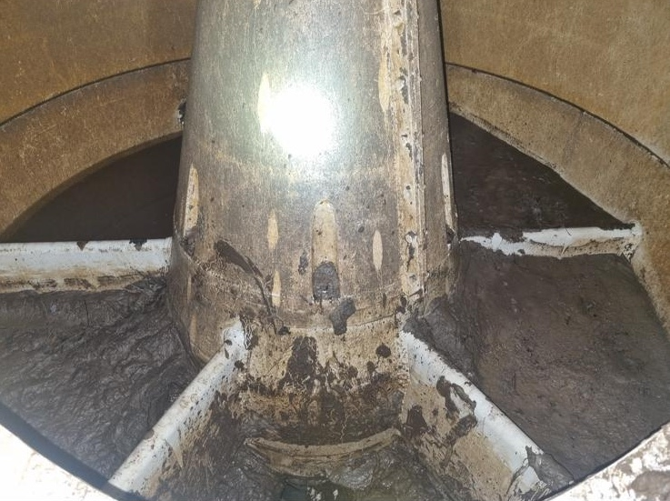
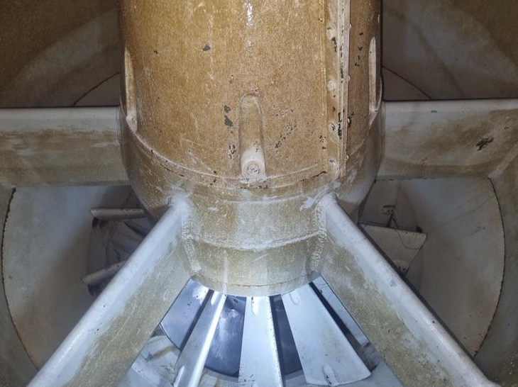
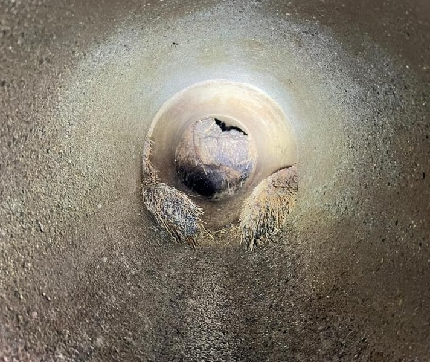
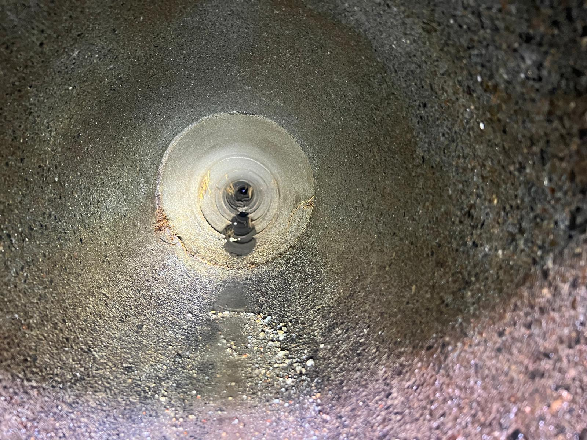
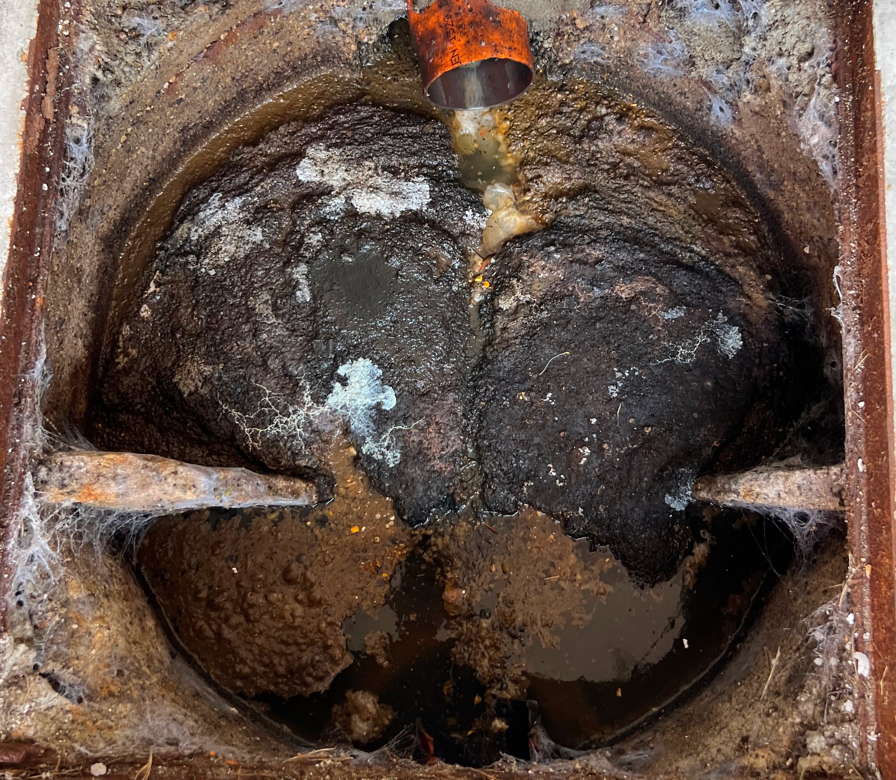

Chi Siamo
Canavese Spurghi S.R.L. è un’azienda a conduzione familiare con sede a San Maurizio Canavese (TO), attiva da oltre 25 anni nel settore degli spurghi civili e industriali.
Operiamo principalmente nel Canavese e in tutta la provincia di Torino, garantendo interventi rapidi, professionali e risolutivi per privati, aziende ed enti pubblici.
I Nostri Servizi
Autospurgo civile e industriale nel Canavese
Interventi completi su reti fognarie pubbliche e private.
Disostruzione tubazioni a Torino e provincia
Canal-jet ad alta pressione per otturazioni e blocchi.
Videoispezioni fognarie professionali
Controllo interno delle tubazioni con telecamere professionali.
Pronto intervento spurghi h24
Disponibilità continua per emergenze e allagamenti.
I Nostri Lavori
Esempi di alcuni lavori eseguiti nel Canavese e in provincia di Torino.
Pulizia e lavaggio girante acqua da fango causa alluvione


Pulizia sifoni canali di scorrimento acque bagnatura


Disotturazione tubazioni con canal-jet ad alta pressione da blocchi di radici e detriti


Disotturazione sifone intasato da calcare


Un'altra Disotturazione sifone intasato da calcare


Pulizia e svuotamento fossa biologica


Contatti
Sede operativa:
Via Biella 39, 10077 San Maurizio Canavese (TO)
Telefono:
Email: canavesespurghisrl@gmail.com